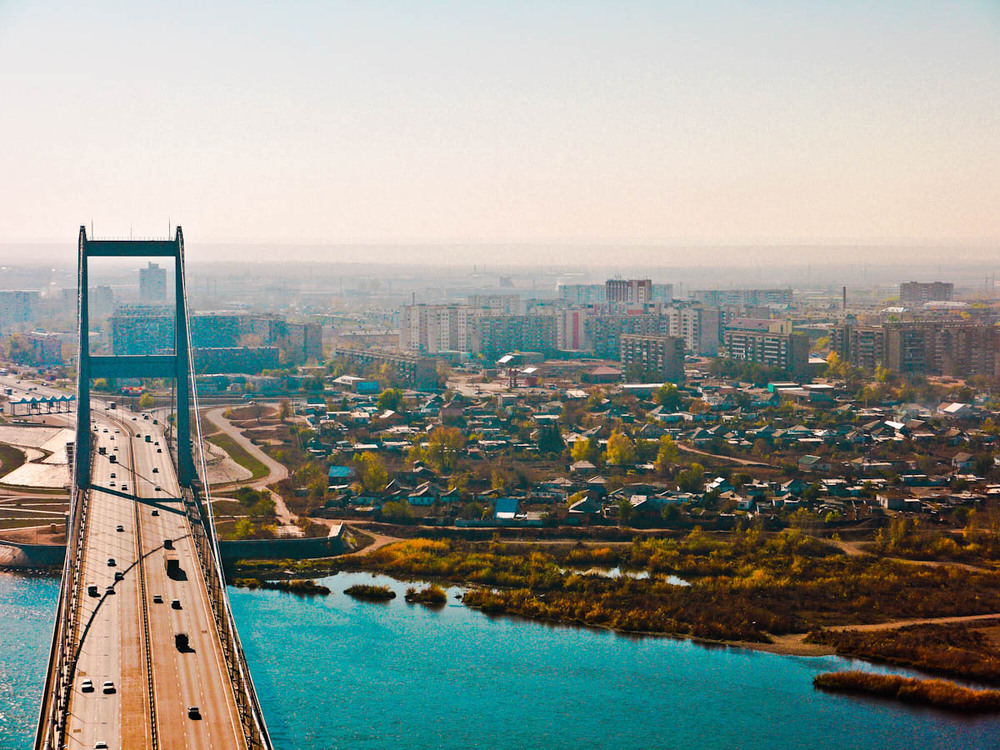

Semey(until 2007 known as Semipalatinsk)is a city in eastern Kazakhstan, in the Kazakh part of Siberia. When Abai Region was created in 2022, Semey became its administrative centre .
It lies along the Irtysh River near the border with Russia, 1,000 kilometers north of Almaty and 700 kilometers southeast of the Russian city of Omsk. Its population is 299,264.

The largest industrial plants of Semey are as follows: cement plant, meat preserving plant, tannery, machine-building and tank-repairing plants .
Semey is an important transportation juncture of Kazakhstan. A number of highways cross the territory of the city as well as Turkestano-Siberian railway. There is an airport in Semey city with inner Kazakhstan and Moscow city flights available.
In 1949-1963 huge territories were polluted by nuclear fall-out from Semipalatinsk proving ground where nuclear weapons were tested. Among the territories which were influenced by nuclear fall-out from Semipalatinsk proving ground was Semipalatinsk city located in the area of high radiation risk. The ecological situation in the region is awful.